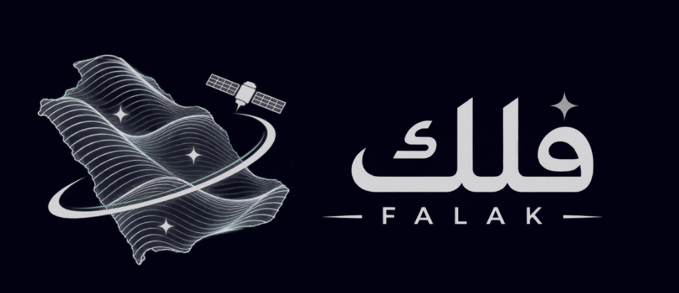

D2D LOW EARTH ORBIT
Mission Control.
- Satellites
- 10
- Regions
- 5
- Users
- 100
Explore the constellation.
Drag to rotate · Scroll to zoom

Explore the constellation.
Four scenarios. Your code, data and results.
Preparing the constellation…